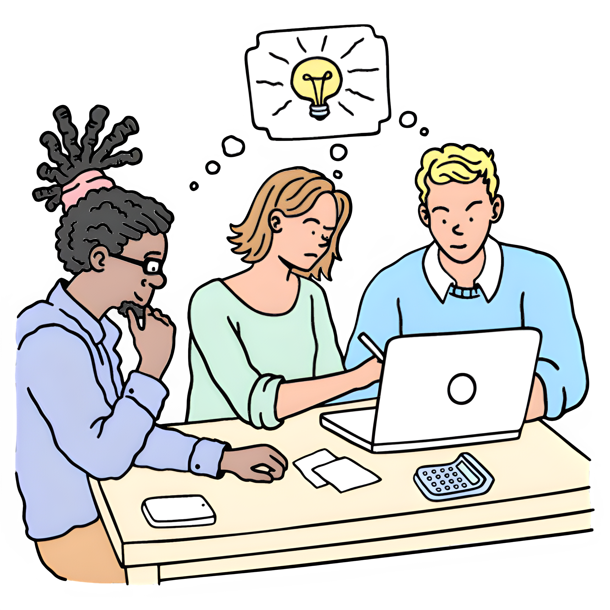
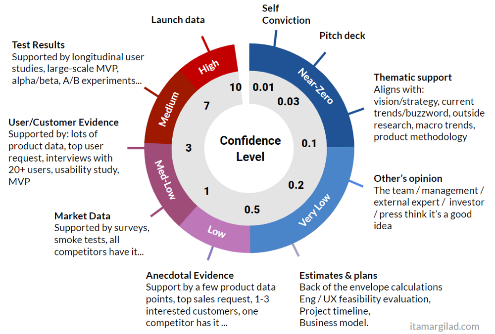
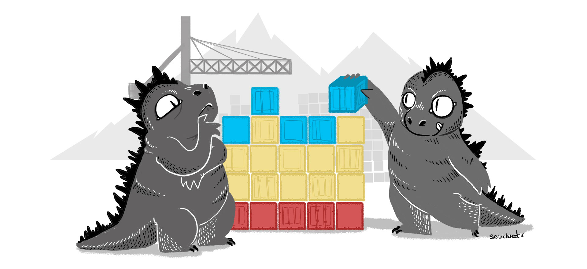
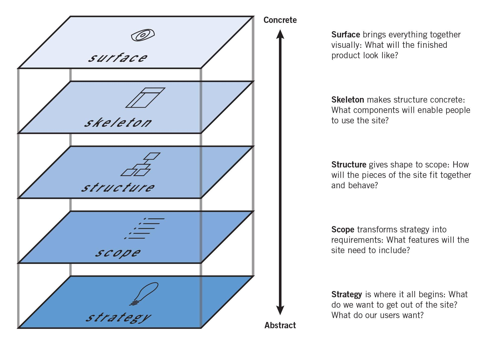

Hopin has been a trip.
I joined as the second designer in July 2020, a few months into this strange pandemic which still hasn’t ended. I had been working as a contractor and trying to find the right permanent job for a while. I often worked with early stage startups and my first thought was: “Just another startup”. The team seemed nice though, and the product interesting.
I couldn’t have known how explosive the growth was going to be.
When I first spoke to Hopin, they had about 50 people on board. I was roughly the 70th hire. Within a year we had 700 people, growing soon to over 1000. The sales team literally couldn’t keep up with enquiries to begin with. We had incredible market fit, and a great reputation to match. That intensity of growth led to many challenges – teams were formed and disbanded, and projects were started then discarded at speed. Despite all the chaos though we generally had a good time, and I enjoyed the work – even if it felt like I went from one ‘design emergency’ to another at times.
These are my takeaways from 20 months on the rocket ship, along with some reflections on process and framework that made everything so much more manageable.
It’s all about the people
It was incredibly exciting to help build the design team. I spent days talking to designers from around the world about their process and ambitions, and trying to understand if they were a match for what we needed. We went from two designers to a team of over thirty (including research) inside that first year. I’m so proud of the diverse, global team we built together, and what we were able to achieve in such a short space of time.

I learnt so much from our team too! Designers from all over the world gave me new perspectives on the craft. I’m especially indebted to Matt Kay for his insights on interface design, Fiorella Rizzà for her guidance on UX Writing, and researchers Barbara Iranzo and Jacqualyn Mangels for their advice and support on research. To be honest, I could namecheck the whole team here – I so enjoyed our many deep conversations on design. (A shout out to all the team at the end).
I learnt an equal amount from our remarkable engineers and product managers. A shout out is due here to product managers Emily Mabin Sutton, Rodolphe Bouygues, and Jono van Deventer, product director Moustafa Khalil, and engineering manager James Clark – who had such valuable insights not only into the product development process but also just how they ‘managed upwards’, navigated complexity, and helped executives understand the work they were doing. I owe Rui Ramos and the whole team from agency Red Badger a special mention too – it was a pleasure to work with such a thoughtful, pragmatic, and user-centered team.
Give away your Lego
You might question Molly Graham’s ethics for choosing to work for Mark Zuckerberg, but you can’t fault her maxim explained in detail in her article Give Away Your Legos. TL;DR – “Don’t get attached to what you’re working on” – there’s always more to do in a fast growing startup. Get used to change, get excited about the next problem, and cheerfully support whoever needs help when they start trying to solve the problems you were working on.
Start rough
Now – this is something any of my design students will have heard me banging on about forever. It’s almost a cliche in design – start rough, generate lots of ideas, throw most of them away. Iterate lots and fast at the start. Test your ideas early, and once you have ideas that resonate with others, refine them and continue testing till you get to ‘high fidelity’ (or even better, working code).
Because Hopin was evolving so rapidly I got to see many different ways of managing projects. Projects that began with high-fidelity designs always had worse outcomes than those that started rough. Starting rough means: I had the opportunity to work with loose concepts and rough ideas, in early collaboration with engineers, product managers, customer success managers, and even actual ‘event organisers’ (our customers in my area). When we worked like this, we were able to produce results that made sense to everyone, were feasible to build, and manageable in realistic chunks of work.
The projects that started ‘planned out’ – whether specced out in a document or (believe it or not) actually wireframed by a Product Manager did not end well.
Itamar Gilad’s Confidence Chart is a work of genius

Giving a clear metric for confidence on any project is absolutely invaluable. Gilad defines these in such a clear and straightforward way. These definitions informed very straightforward, realistic conversations on where we were and where we needed to get to. Working with teams that were informed by this viewpoint gave us a totally different perspective, and leveraging this perspective gave us stellar results in terms of the user performance of new product features. Shout out to Rodolphe for introducing me to this.

Prater’s OOUX framework needs more attention
I know I’ve sung Sofia Prater’s praises before, but damn this is such a transformative tool when dealing with complex systems. Not only does it give you a common language with engineers and product managers, it allows you to plan a system before you start thinking about the screens it will inhabit. I cannot stress enough what a lifesaver this is, and how many weeks of pain I saved by mapping things out before getting into screen design. Go and read her introductory article right after this!

Jesse James Garrett still matters
Building on the last two points – Garrett’s “Elements of User Experience” is an incredibly useful framework. It really helps frame the space for people who don’t understand the role of a digital product designer. Being able to point to this chart and say “OK – let’s talk about the strategy behind what we’re trying to achieve: Down here at the foundation of the product” gave whole teams a shared framework for understanding. It also helped build a common language with team-mates who saw design as only the ‘visual layer’ – allowing me to explain what I was trying to achieve by talking about the architecture of the product before the shapes on screen.
It’s all about the team process
It doesn’t matter how great a designer you are in terms of your craft skills. At the end of the day, the only thing that counts is the product. Your ‘designs’ are just transitory artefacts of a process – to be discarded once the product is built. Your ‘designs’ are obsolete as soon as an engineer starts building them – and your concepts encounter the hard limits of reality.
Getting good results in digital product is all about the process – and not just the ‘design’ process. It’s about the way your whole team works together. Good news: This is something that can be designed and iterated on too.
In recent work on a core product we built regular cycles of review and exchange into our team process. They weren’t big changes, but formalising these ‘ad-hoc’ processes transformed our ability to deliver a high quality product. This took three main forms:
A ‘snagging’ document (later named ‘design QA’)
Initially using just a simple Google Sheet, the whole team (and others outside of it) where empowered to report visual or experience bugs of any kind in the document, adding screenshots or videos where appropriate.A weekly ‘snags review’
Myself, the Engineering Manager and the Product Manager then triaged this list every week – checking what had been fixed already, what we could safely ignore, and what really needed fixing (and moving into JIRA).A weekly ‘product demo’
As an internal team, separate from any ‘review’ with company leadership, engineers were given the chance to demo anything new they had working in code. This gave the whole team a chance to see what was working and what wasn’t, and give suggestions for improvement while that engineer was still working on the feature. This meant we could quickly squash bugs and improve usability outside of more formal review cycles.Fortnightly team retrospectives.
These sessions gave us a chance to review what was working and what wasn’t, and give praise to team-members for anything good they were doing. Not only were they generally good for morale, they also helped us course-correct on the initiatives already mentioned.
Design is two-thirds education
Building on the last point:
Design is a specialised skill that not many people have access to.
To really collaborate effectively as a designer, you have to be able to explain what you do, what you’re trying to achieve, and how you plan to get there. Now, this is true for any kind of collaboration – I’m thinking here of how the best product managers and engineers are excellent at explaining their craft to others. However, this is especially true for design, given that our craft goes right to the roots of the creative process.
Only by helping others understand what we do, and what we need to succeed can we really be effective in our roles. Moreover, we can use our tools as designers to help build processes that leverage the diverse abilities and perspectives of all team members.
This is perhaps where the true strength of capital ‘D’ Design lies. Not just as a craft (like ‘digital product design’) – but as a basic human function. Our collective ability to think ahead, to think in terms of systems and not just individual components. Our ability to be comfortable with uncertainty, and to help bring others along for the ride.
Meditation is a life saver
A final note: I didn’t always manage to keep my practice up, but damn did I notice when I slipped! Finding time to step away from the screen and contemplate was essential to keeping my sanity.
Teaching meditation also helped me learn – I was given the honour of leading a few short sessions with the entire company (thanks, Nina Frank). Having over a thousand people watching definitely helped focus the mind! I was humbled by the hundreds of messages I received from those who found it useful. Shout out to whoever coined #chillwithbill 🙏.
In conclusion
I’m honoured to have been a small part of startup history. Hopin was one of the fastest growing companies of all time – it was wild to witness and build on the explosive growth. It’s a shame that they had to make layoffs, but I believe they now have a solid core team to build the next, ‘hybrid’ phase of the company. I wish them all the best of success, and I’m excited to see what they do next.
Credits
A final thanks to everyone in the design team at Hopin that I haven’t mentioned already – it was such a pleasure working with you.
I’m listing names from memory so apologies to anyone I forgot! Alex Roitch, Andrew Cobley, Brian Greene, Bulent Shik, Darci Dutcher, Dora Türkoğlu, Emma Hardman, Federica–Sophie Sissa, Filippo Gin, Halyna Hlynska, Helen Stead, Ivan Nevrela, Jagoda Pietrzak, Jason Ring, Javiera Craig, James Price, Joe Li, João Costa, Jon Atkins, Kah-Mun Liew, Kathryn Thomas Hastings, Luca Murgia, Masha Ignatova, Melissa Cliver, Noah Shrader, Peter Roessler, Raya Karova, Sasha Pronina, Vanessa Vilela, Yaprak Kaynar, Victor Samokhvalov
People outside the design team – Shout out to Adil Ali and Mike Stuart for joining me for the early meditation sessions and becoming such great friends and allies. Keep the music alive, Alex Dique! Alex Nita, Alena Taranova, Türerkan İnce, Matt Clough, Avipaul Bhandari, Ken Keel, Louise Strong, Violet Graham, Martin Doyle – thanks for the good times.
Special mention to Hazel Song for inviting me onboard!
Illustration credit: Bruxelles by Streamline.
Testimonials
Genevieve Smith
Lead product designerHis breadth and depth of knowledge combined with his ability to work with others allows him to elicit the very best out of his teammates to produce world-class products.”